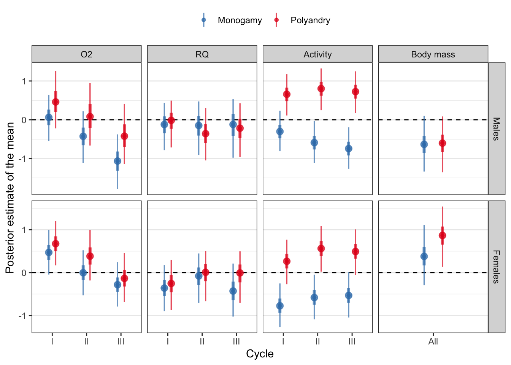
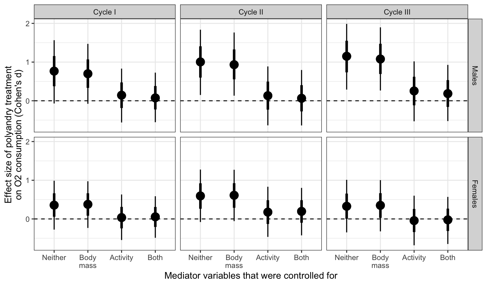
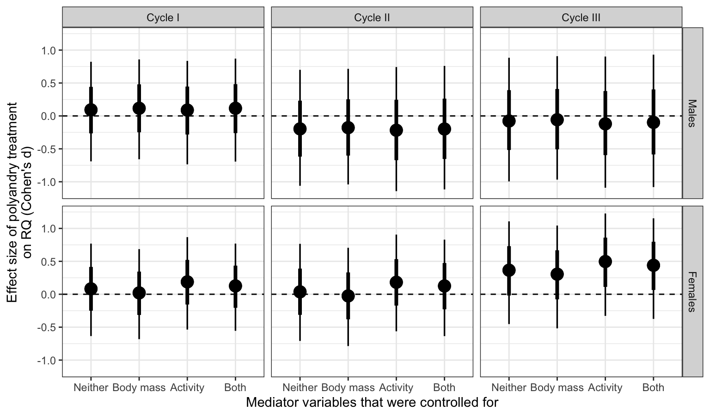

Statistical analysis
Last updated: 2020-03-09
Checks: 7 0
Knit directory: respiration_exp_evolution/
This reproducible R Markdown analysis was created with workflowr (version 1.6.0). The Checks tab describes the reproducibility checks that were applied when the results were created. The Past versions tab lists the development history.
Great! Since the R Markdown file has been committed to the Git repository, you know the exact version of the code that produced these results.
Great job! The global environment was empty. Objects defined in the global environment can affect the analysis in your R Markdown file in unknown ways. For reproduciblity it’s best to always run the code in an empty environment.
The command set.seed(20190703) was run prior to running the code in the R Markdown file. Setting a seed ensures that any results that rely on randomness, e.g. subsampling or permutations, are reproducible.
Great job! Recording the operating system, R version, and package versions is critical for reproducibility.
Nice! There were no cached chunks for this analysis, so you can be confident that you successfully produced the results during this run.
Great job! Using relative paths to the files within your workflowr project makes it easier to run your code on other machines.
Great! You are using Git for version control. Tracking code development and connecting the code version to the results is critical for reproducibility. The version displayed above was the version of the Git repository at the time these results were generated.
Note that you need to be careful to ensure that all relevant files for the analysis have been committed to Git prior to generating the results (you can use wflow_publish or wflow_git_commit). workflowr only checks the R Markdown file, but you know if there are other scripts or data files that it depends on. Below is the status of the Git repository when the results were generated:
Ignored files:
Ignored: .DS_Store
Ignored: .Rapp.history
Ignored: .Rhistory
Ignored: .Rproj.user/
Ignored: Supplementary tables and figures.docx
Ignored: analysis/.DS_Store
Ignored: data/.DS_Store
Ignored: data/top_model_files.rds
Ignored: manuscript.docx
Ignored: output/.DS_Store
Ignored: output/temp_files/
Ignored: ~$nuscript.docx
Untracked files:
Untracked: online_supp/
Untracked: output/flow_diagram.pdf
Untracked: output/mediation_figure_RQ.pdf
Untracked: output/mediation_figure_VO2.pdf
Untracked: output/pairs_plot.pdf
Untracked: output/posterior_means_plot.pdf
Untracked: ~$pplementary tables and figures.docx
Unstaged changes:
Deleted: output/Figure 2.pdf
Modified: output/brms_SEM.rds
Note that any generated files, e.g. HTML, png, CSS, etc., are not included in this status report because it is ok for generated content to have uncommitted changes.
These are the previous versions of the R Markdown and HTML files. If you’ve configured a remote Git repository (see ?wflow_git_remote), click on the hyperlinks in the table below to view them.
| File | Version | Author | Date | Message |
|---|---|---|---|---|
| Rmd | 12a1f4f | lukeholman | 2020-03-09 | another commit |
| html | 0ae0020 | lukeholman | 2020-03-03 | Build site. |
| Rmd | df06126 | lukeholman | 2020-03-03 | tweak stats |
| html | df06126 | lukeholman | 2020-03-03 | tweak stats |
| html | 8fe4fc9 | lukeholman | 2020-03-03 | Build site. |
| Rmd | bea6593 | lukeholman | 2020-03-03 | tweak stats |
| html | dbbbcb7 | lukeholman | 2020-03-03 | Build site. |
| Rmd | 0a35758 | lukeholman | 2020-03-03 | quick test |
| html | 0a35758 | lukeholman | 2020-03-03 | quick test |
| Rmd | 2752352 | lukeholman | 2020-01-17 | Almost reaedy |
| html | 2752352 | lukeholman | 2020-01-17 | Almost reaedy |
Load R packages
library(tidyverse)
library(gridExtra)
library(grid)
library(brms)
library(RColorBrewer)
library(glue)
library(kableExtra)
library(tidybayes)
library(bayestestR)
library(MuMIn)
library(glue)
library(ggridges)
library(future)
library(future.apply)
library(GGally)
library(knitrhooks) # install with devtools::install_github("nathaneastwood/knitrhooks")
output_max_height() # a knitrhook option
options(stringsAsFactors = FALSE)
# Define function for the inverse logit
inv_logit <- function(x) 1 / (1 + exp(-x))Load respirometry data
respiration <- read_csv("data/2.metabolic_rates.csv") %>%
rename(SELECTION = `?SELECTION`)Draw the flow diagram
DiagrammeR::grViz('digraph {
graph [layout = dot, rankdir = LR]
# define the global styles of the nodes. We can override these in box if we wish
node [shape = rectangle, style = filled, fillcolor = Linen]
"Metabolic\nrate" [shape = oval, fillcolor = Beige]
"Metabolic\nsubstrate" [shape = oval, fillcolor = Beige]
"Other factors\n(e.g. physiology)" [shape = oval, fillcolor = Beige]
# edge definitions with the node IDs
"Mating system\ntreatment (M vs P)" -> {"Other factors\n(e.g. physiology)", "Body mass" , "Activity"} -> {"Metabolic\nrate", "Metabolic\nsubstrate"}
{"Metabolic\nrate"} -> {"O\u2082 consumption", "CO\u2082 production"}
{"O\u2082 consumption", "CO\u2082 production"} -> "Respiratory\nquotient (RQ)"
{"Metabolic\nsubstrate"} -> "Respiratory\nquotient (RQ)"
}')Figure 1: Directed acyclic graph (DAG) showing the key causal relationships that we hypothesised a priori between the measured variables (squares) and latent variables (ovals). This DAG motivated the Bayesian structural equation model discussed in the Methods and Results, which attempts to decompose the effects of treatment on respiration (measured via O2 and CO2 flux, and their ratio, RQ) into paths that travel via body mass, activity, or other unmeasured factors such as physiology.
Inspecting the raw data
Create a “pairs plot” of the raw data.
modified_densityDiag <- function(data, mapping, ...) {
ggally_densityDiag(data, mapping, ...) + scale_fill_brewer(type = "qual", palette = "Set1", direction = -1) +
scale_x_continuous(guide = guide_axis(check.overlap = TRUE))
}
modified_points <- function(data, mapping, ...) {
ggally_points(data, mapping, ...) + scale_colour_brewer(type = "qual", palette = "Set1", direction = -1) +
scale_x_continuous(guide = guide_axis(check.overlap = TRUE))
}
modified_facetdensity <- function(data, mapping, ...) {
ggally_facetdensity(data, mapping, ...) + scale_colour_brewer(type = "qual", palette = "Set1", direction = -1)
}
modified_box_no_facet <- function(data, mapping, ...) {
ggally_box_no_facet(data, mapping, ...) + scale_fill_brewer(type = "qual", palette = "Set1", direction = -1)
}
pairs_plot <- respiration %>%
select(SEX, SELECTION, CYCLE, VO2, VCO2, RQ, ACTIVITY, BODY_WEIGHT) %>%
mutate(VO2 = VO2 * 1000,
VCO2 = VCO2 * 1000,
BODY_WEIGHT = BODY_WEIGHT * 1000,
ACTIVITY = ACTIVITY * 100) %>%
mutate(SEX = factor(ifelse(SEX == "M", "Male", "Female"), c("Male", "Female"))) %>%
rename(Sex = SEX, Treatment = SELECTION, Cycle = CYCLE,
Activity = ACTIVITY, `Body mass` = BODY_WEIGHT) %>%
ggpairs(aes(colour = Treatment),
diag = list(continuous = wrap(modified_densityDiag, alpha = 0.7),
discrete = wrap("blank")),
lower = list(continuous = wrap(modified_points, alpha = 0.7, size = 0.5),
discrete = wrap("blank"),
combo = wrap(modified_box_no_facet, alpha = 0.7)),
upper = list(continuous = wrap(modified_points, alpha = 0.7, size = 0.5),
discrete = wrap("blank"),
combo = wrap(modified_facetdensity, alpha = 0.7, size = 0.5)))
pairs_plot %>% ggsave(filename = "output/pairs_plot.pdf", height = 10, width = 10)
pairs_plot
Figure 2: Boxplots, scatterplots, and density plots illustrating the variance and covariance among the explanatory variables (Treatment, Sex, and Cycle) and the five response variables. The data are coloured by treatment (red for polyandry, blue for monogamy). The plot shows the raw data in their original units, namely the number of mm of O2 consumed or CO2 produced, the % time spent active, and the mass of the fly in milligrams (RQ is a ratio and thus has no units). Note that RQ has as expected range of 0.7-1.0 because of the chemistry of respiration, but values outside this range often occur due to measurement error for O2 and/or CO2.
Fit the first brms models, ignoring the moderator variables
Scale the input data
Here, we scale and centre the body mass and activity (across all samples), and multiply VO2 and VCO2 by 1000 so that their units (and resulting regression coefficients) are close to those assumed by the brms default priors.
We did not scale and centre VO2 and VCO2, because we will soon relate them to each other via the respiratory quotient, RQ, so it makes sense to leave them in their original units rather than converting their units to standard deviations.
Note that body mass and activity are not actually used until the following section (i.e. Fit the brms structural equation model (SEM)).
scaled_data <- respiration %>%
mutate(VO2 = VO2 * 1000,
VCO2 = VCO2 * 1000,
BODY_WEIGHT = as.numeric(scale(BODY_WEIGHT)),
ACTIVITY = as.numeric(scale(ACTIVITY))) %>%
rename(BODYMASS = BODY_WEIGHT)Write out the full model’s formulae
Here, I write out all the formulae for the “full model”, as well as their equivalents for all the simpler models nested within the full model. All of these models contain more than one formula each (i.e. they are multivariate models): one formula for oxygen consumption (VO2) and one for CO2 production (VCO2), as well as a formula for the parameter RQ (the respiratory quotient, i.e. VCO2 / VO2). I assume that VO2 and RQ are both affected by the predictor variables that resukt from the experimental design, namely SELECTION (i.e. M vs P treatment), SEX (Male or Female), CYCLE (I, II, or III: this refers to the first, second, and third measurement of O2 and CO2 for each triad of flies), LINE (a random intercept term with 8 levels, one for each of the four independent replicates of the M an P treatmens), and SAMPLE (which identifies the three replicate measures of each triad of flies across the three cycles). The formulae for VO2 and VCO2 are as follows:
VO2
Formula: VO2 ~ SELECTION * SEX * CYCLE + (1 | LINE) + (1 | SAMPLE)
This formula allows for effects on VO2 of sex, selection and cycle (and all 2- and 3-way interactions), and models the variation in VO2 within and between each triad of flies and each replicate selection line (preventing pseudo-replication by properly accounting for our experimental design).
VCO2 (as determined by the parameter RQ)
Formulae (2-part model, see vignette("brms_nonlinear")):
VCO2 ~ VO2 * (0.7 + 0.3 * inv_logit(RQ))
RQ ~ SELECTION * SEX * CYCLE + (1 | LINE) + (1 | SAMPLE)
VCO2 is assumed to depend on the value of VO2 from the same measurement, multiplied by RQ, a parameter that is constrained to vary between 0.7 and 1 (based on our prior knowledge of the chemistry of respiration) through the use of the inverse logit function. In turn, RQ is assumed to depend on the same set of predictors as for VO2.
Priors
To apply some mild regularisation and assist model convergence, we set a prior on all the fixed effect parameters of normal(0, 3).
Family
All response variables are assumed to follow a normal (Gaussian) distribution.
Finding all the sub-models for model selection
Now that we have written out the full model, we can find all its component sub-models. This is complicated by the fact that it is a multivariate model, and so we need to find the sub-models for both VO2 and RQ, and then find all possible combinations of these.
# For convenience, we borrow the function `dredge()` from the MuMIn package,
# and use it find all submodels
all_sub_models <- paste(get.models(with(options(na.action = na.fail),
dredge(lm(VO2 ~ SELECTION * SEX * CYCLE, data = scaled_data))), subset = TRUE) %>%
map_chr(~ as.character(.x$call)[2]) %>%
unname() %>%
str_remove_all(" [+] 1") %>%
str_remove_all("VO2 ~ "),
"+ (1 | LINE) + (1 | SAMPLE)")
# Find all combinations of sub-model formulas for VO2 and RQ
combos <- expand.grid(vo2 = all_sub_models,
rq = all_sub_models, stringsAsFactors = FALSE)
# Write out the complete multi-part formulas for all 361 to be compared
write_formula <- function(vo2, rq){
glue("
bf(VO2 ~ {vo2}) + bf(VCO2 ~ VO2 * (0.7 + 0.3 * inv_logit(RQ)), RQ ~ {rq}, nl = TRUE) + set_rescor(FALSE)") %>%
as.character()
}
all_formulas <- map2(combos[,1],
combos[,2],
write_formula)
print("Inspect the first few formulas:")[1] "Inspect the first few formulas:"
head(unlist(all_formulas))[1] "bf(VO2 ~ CYCLE + SELECTION + SEX + SELECTION:SEX + (1 | LINE) + (1 | SAMPLE)) + bf(VCO2 ~ VO2 * (0.7 + 0.3 * inv_logit(RQ)), RQ ~ CYCLE + SELECTION + SEX + SELECTION:SEX + (1 | LINE) + (1 | SAMPLE), nl = TRUE) + set_rescor(FALSE)" [2] "bf(VO2 ~ CYCLE + SELECTION + SEX + (1 | LINE) + (1 | SAMPLE)) + bf(VCO2 ~ VO2 * (0.7 + 0.3 * inv_logit(RQ)), RQ ~ CYCLE + SELECTION + SEX + SELECTION:SEX + (1 | LINE) + (1 | SAMPLE), nl = TRUE) + set_rescor(FALSE)" [3] "bf(VO2 ~ CYCLE + SELECTION + SEX + CYCLE:SELECTION + SELECTION:SEX + (1 | LINE) + (1 | SAMPLE)) + bf(VCO2 ~ VO2 * (0.7 + 0.3 * inv_logit(RQ)), RQ ~ CYCLE + SELECTION + SEX + SELECTION:SEX + (1 | LINE) + (1 | SAMPLE), nl = TRUE) + set_rescor(FALSE)" [4] "bf(VO2 ~ CYCLE + SELECTION + SEX + CYCLE:SEX + SELECTION:SEX + (1 | LINE) + (1 | SAMPLE)) + bf(VCO2 ~ VO2 * (0.7 + 0.3 * inv_logit(RQ)), RQ ~ CYCLE + SELECTION + SEX + SELECTION:SEX + (1 | LINE) + (1 | SAMPLE), nl = TRUE) + set_rescor(FALSE)" [5] "bf(VO2 ~ CYCLE + SELECTION + SEX + CYCLE:SELECTION + (1 | LINE) + (1 | SAMPLE)) + bf(VCO2 ~ VO2 * (0.7 + 0.3 * inv_logit(RQ)), RQ ~ CYCLE + SELECTION + SEX + SELECTION:SEX + (1 | LINE) + (1 | SAMPLE), nl = TRUE) + set_rescor(FALSE)" [6] "bf(VO2 ~ CYCLE + SELECTION + SEX + CYCLE:SEX + (1 | LINE) + (1 | SAMPLE)) + bf(VCO2 ~ VO2 * (0.7 + 0.3 * inv_logit(RQ)), RQ ~ CYCLE + SELECTION + SEX + SELECTION:SEX + (1 | LINE) + (1 | SAMPLE), nl = TRUE) + set_rescor(FALSE)"
Run all the brms models and save them to disk
Here, we run all 361 of the models whose formulae are given in the vector all_formulas, and save the results of each model to an external hard drive (this uses about 55GB). Note that the prior for each model is the same, except that one does not need to specify a prior on the fixed effects in models that do not contain any fixed effects, which is why the if() statements are needed.
# Function to run a model using formula number "i" in "formula_list" on dataframe "my_data"
run_model <- function(i, formula_list, my_data){
save_location <- "/Volumes/LACIE_SHARE/brms_respiration"
num <- str_pad(i, 3, pad = "0")
file_name <- glue("{save_location}/model_{num}.rds")
if(file.exists(file_name)) return(NULL)
focal_formula <- eval(parse(text = formula_list[[i]]))
if(!str_detect(focal_formula, "VO2 ~ 1") & !str_detect(focal_formula, "RQ ~ 1")){
model <- brm(focal_formula,
data = my_data,
iter = 10000, chains = 4, cores = 1,
prior = c(prior(normal(0, 3), class = "b", resp = "VO2"),
prior(normal(0, 3), class = "b", resp = "VCO2", nlpar = "RQ")),
control = list(max_treedepth = 20, adapt_delta = 0.99),
save_all_pars = TRUE)
}
if(!str_detect(focal_formula, "VO2 ~ 1") & str_detect(focal_formula, "RQ ~ 1")){
model <- brm(focal_formula,
data = my_data,
iter = 10000, chains = 4, cores = 1,
prior = prior(normal(0, 3), class = "b", resp = "VO2"),
control = list(max_treedepth = 20, adapt_delta = 0.99),
save_all_pars = TRUE)
}
if(str_detect(focal_formula, "VO2 ~ 1") & !str_detect(focal_formula, "RQ ~ 1")){
model <- brm(focal_formula,
data = my_data,
iter = 10000, chains = 4, cores = 1,
prior = prior(normal(0, 3), class = "b", resp = "VCO2", nlpar = "RQ"),
control = list(max_treedepth = 20, adapt_delta = 0.99),
save_all_pars = TRUE)
}
if(str_detect(focal_formula, "VO2 ~ 1") & str_detect(focal_formula, "RQ ~ 1")){
model <- brm(focal_formula,
data = my_data,
iter = 10000, chains = 4, cores = 1,
control = list(max_treedepth = 20, adapt_delta = 0.99),
save_all_pars = TRUE)
}
saveRDS(model, file = file_name)
rm(model) # Force clean up to help R not run out of memory
gc()
return(NULL)
}
# Run all the models in parallel over 4 cores - this worked fine on a 2015 iMac with 32GB RAM
options(mc.cores=4)
plan(multiprocess)
future_lapply(1:length(all_formulas),
run_model,
formula_list = all_formulas,
my_data = scaled_data)Compare all the fitted brms models using leave-one-out cross validation (LOO)
It is not possible to load all the models without running out of memory, so I here use a simple algorithm to select the top 10 models. The algorithm picks 20 candidate models at random, ranks them using LOO, and then removes the 10 worst-fitting models from the list of models under comparison. This is repeated until only 10 models remain - these are the 10 best-fitting models as ranked by LOO (under the PSIS-LOO approximation; see the loo package documentation and papers by Aki Vehtari and colleagues).
if(!file.exists("data/model_selection_table.rds")){
# Get the file names of the 361 models
out_files <- list.files("/Volumes/LACIE_SHARE/brms_respiration", full.names = TRUE)
# Algorithm to pick the top 10 models without running out of memory
while(length(out_files) > 20){
# Pick 20 random models that have not yet been eliminated
sampled_files <- sample(out_files, 20)
# Rank all 20 models using LOO cross-validation
weights <- model_weights(
readRDS(sampled_files[1]), readRDS(sampled_files[2]),
readRDS(sampled_files[3]), readRDS(sampled_files[4]),
readRDS(sampled_files[5]), readRDS(sampled_files[6]),
readRDS(sampled_files[7]), readRDS(sampled_files[8]),
readRDS(sampled_files[9]), readRDS(sampled_files[10]),
readRDS(sampled_files[11]), readRDS(sampled_files[12]),
readRDS(sampled_files[13]), readRDS(sampled_files[14]),
readRDS(sampled_files[15]), readRDS(sampled_files[16]),
readRDS(sampled_files[17]), readRDS(sampled_files[18]),
readRDS(sampled_files[19]), readRDS(sampled_files[20]),
weights = "loo")
# Discard all but the 10 top-ranked models from the set still to be compared
to_keep <- sampled_files[order(weights, decreasing=TRUE)[1:10]]
to_remove <- sampled_files[!(sampled_files %in% to_keep)]
out_files <- out_files[!(out_files %in% to_remove)]
print(paste(length(out_files), "left to compare"))
}
top_model_files <- out_files
saveRDS(top_model_files, "data/top_model_files.rds")
# Get the weights for the top 10 models
resp_model_weights <- model_weights(
readRDS(top_model_files[1]), readRDS(top_model_files[2]),
readRDS(top_model_files[3]), readRDS(top_model_files[4]),
readRDS(top_model_files[5]), readRDS(top_model_files[6]),
readRDS(top_model_files[7]), readRDS(top_model_files[8]),
readRDS(top_model_files[9]), readRDS(top_model_files[10]),
weights = "loo"
)
# Format them nicely in a table
resp_model_weights <- round(resp_model_weights, 3)
names(resp_model_weights) <- out_files[as.numeric(str_extract(names(resp_model_weights), "[:digit:]+"))]
names(resp_model_weights) <- all_formulas[as.numeric(str_extract(names(resp_model_weights), "[:digit:]+"))]
ction_table <- enframe(resp_model_weights, name = "Model", value = "LOO model weight") %>%
arrange(-`LOO model weight`) %>%
mutate(Model = str_remove_all(Model, " \\+ \\(1 \\| LINE\\) \\+ \\(1 \\| SAMPLE\\)\\) \\+ bf\\("),
Model = str_remove_all(Model, "bf\\("),
Model = str_remove_all(Model, "~ VO2 \\* \\(0.7 \\+ 0.3 \\* inv_logit\\(RQ\\)\\), "),
Model = str_remove_all(Model, " \\+ \\(1 \\| LINE\\) \\+ \\(1 \\| SAMPLE\\), nl = TRUE\\) \\+ set_rescor\\(FALSE\\)")) %>%
mutate(split = strsplit(Model, split = " RQ"),
`Model of VO2` = map_chr(split, ~ .x[1]),
`Model of RQ` = map_chr(split, ~ .x[2])) %>%
mutate(`Model of VO2` = str_remove_all(`Model of VO2`, "VO2 "),
`Model of VO2` = str_remove_all(`Model of VO2`, "VCO2"),
`Model of RQ` = str_replace_all(`Model of RQ`, " ~", "~")) %>%
select(`Model of VO2`, `Model of RQ`, `LOO model weight`)
saveRDS(model_selection_table, file = "data/model_selection_table.rds")
} else {
top_model_files <- readRDS("data/top_model_files.rds")
model_selection_table <- readRDS("data/model_selection_table.rds")
}Model selection table
This table shows the top ten models from the set of 361 that was compared. The models were compared using leave-one-out cross validation (LOO), which is similar to more familiar metrics like AIC, but is regarded as the current best method for comparing the fit of a set of Bayesian models (see the documentation in brms and loo packages).
library(formattable)
model_selection_table %>%
mutate_if(is.character, ~ str_replace_all(.x, "CYCLE", "Cycle")) %>%
mutate_if(is.character, ~ str_replace_all(.x, "SELECTION", "Selection")) %>%
mutate_if(is.character, ~ str_replace_all(.x, "SEX", "Sex")) %>%
mutate(`LOO model weight` = color_bar("lightgreen")(`LOO model weight`)) %>%
kable(escape = F, full.width = FALSE) %>% kable_styling()| Model of VO2 | Model of RQ | LOO model weight |
|---|---|---|
| ~ Cycle + Sex + Cycle:Sex | ~ Cycle | 0.381 |
| ~ Cycle + Selection + Sex + Cycle:Sex | ~ Cycle + Sex | 0.209 |
| ~ Cycle + Selection + Sex + Selection:Sex | ~ Cycle + Sex | 0.189 |
| ~ Cycle + Sex | ~ Cycle | 0.099 |
| ~ Cycle + Sex | ~ Cycle + Sex | 0.063 |
| ~ Cycle + Sex | ~ Sex | 0.034 |
| ~ Cycle + Selection + Sex | ~ Cycle + Sex | 0.008 |
| ~ Cycle + Selection + Sex + Cycle:Selection | ~ 1 | 0.008 |
| ~ Cycle + Selection + Sex + Cycle:Selection | ~ Cycle | 0.005 |
| ~ Cycle + Sex + Cycle:Sex | ~ Sex | 0.005 |
Inspect the parameter estimates
Perform Bayesian model averaging
Since there is no model that was strongly preferred to all the others, we here perform model averaging to calculate the parameter estimates for all the fixed effects that were present in at least 1 of the top 3 models. Parameters that were not present in all models were set to zero for models that lacked that parameter: this is sometimes called “full model averaging” (see e.g. ?MuMIn::model.avg), and it applies “shrinkage”, meaning that parameters that are not present in all of the top models get shrunk somewhat towards zero. The models are averaged according to their “stacking weights”, which is the current state-of-the-art for Bayesian model averaging (see e.g. here).
avg <- posterior_average(
readRDS(top_model_files[1]), readRDS(top_model_files[2]), readRDS(top_model_files[3]),
weights = "stacking", missing = 0) %>%
select(contains("b_"), contains("sd_"))
make_model_summary_table <- function(posterior_samples){
pvalues <- summarise_all(posterior_samples, p_direction) %>%
gather(key, p) %>%
mutate(p = 1 - p) %>%
mutate(` ` = ifelse(p < 0.05, "\\*", ""),
` ` = replace(` `, p > 0.05 & p < 0.1, "~"),
` ` = replace(` `, p < 0.01, "**"),
` ` = replace(` `, p < 0.001, "***"))
posterior_samples %>%
summarise_all(~ list(posterior_summary(.x))) %>% gather() %>%
mutate(Estimate = map_dbl(value, ~ .x[1]),
Error = map_dbl(value, ~ .x[2]),
Q2.5 = map_dbl(value, ~ .x[3]),
Q97.5 = map_dbl(value, ~ .x[4])) %>%
select(-value) %>%
left_join(pvalues, by = "key") %>%
mutate_if(is.numeric, ~ round(.x, 3)) %>%
mutate(p = replace(p, grepl("sd_", key), " "),
p = replace(p, grepl("sigma_", key), " "),
p = replace(p, grepl("Intercept_", key), " "),
` ` = replace(` `, grepl("sd_", key), " "),
` ` = replace(` `, grepl("sigma_", key), " "),
` ` = replace(` `, grepl("Intercept_", key), " "))
}Inspect tables of results
Here we present the model-averaged estimates for each of the fixed effects, as well as the results for the top model that contained our most interesting predictor, namely the M vs P selection treatment (i.e. the second-best model in the model selection table).
Results from model averaging
model_averaging_results <- avg %>%
select(-starts_with("r_"), -starts_with("z_"), -starts_with("lp"), -starts_with("sd_")) %>%
make_model_summary_table() %>%
mutate(key = str_remove_all(key, "b_"),
split = strsplit(key, split = "_"),
resp = map_chr(split, ~ .x[1]),
Parameter = map_chr(split, ~ tail(.x, 1)),
resp = replace(resp, resp == "VCO2", "RQ"),
Parameter = replace(Parameter, Parameter == "CYCLEIII", "Cycle (III)"),
Parameter = replace(Parameter, Parameter == "CYCLEII", "Cycle (II)"),
Parameter = replace(Parameter, Parameter == "SEXM", "Sex (M)"),
Parameter = replace(Parameter, Parameter == "CYCLEIII:SEXM", "Cycle (III) x Sex (M)"),
Parameter = replace(Parameter, Parameter == "CYCLEII:SEXM", "Cycle (II) x Sex (M)"),
Parameter = replace(Parameter, Parameter == "SELECTIONPoly:SEXM", "Treatment (P) x Sex (M)"),
Parameter = replace(Parameter, Parameter == "SELECTIONPoly", "Treatment (P)")) %>%
select(resp, Parameter, everything()) %>% select(-split, -key) %>%
arrange(desc(resp))
saveRDS(model_averaging_results, "online_supp/model_averaging_results.rds")
model_averaging_results %>%
kable() %>%
kable_styling(full_width = FALSE)| resp | Parameter | Estimate | Error | Q2.5 | Q97.5 | p | |
|---|---|---|---|---|---|---|---|
| VO2 | Intercept | 7.627 | 0.632 | 6.382 | 8.910 | 0 | *** |
| VO2 | Cycle (II) | -0.903 | 0.235 | -1.359 | -0.443 | 0 | *** |
| VO2 | Cycle (III) | -1.984 | 0.234 | -2.444 | -1.525 | 0 | *** |
| VO2 | Treatment (P) | 1.079 | 0.857 | -0.653 | 2.714 | 0.096 | ~ |
| VO2 | Sex (M) | -1.485 | 0.560 | -2.591 | -0.416 | 0.004 | ** |
| VO2 | Treatment (P) x Sex (M) | 0.950 | 0.806 | -0.259 | 2.541 | 0.226 | |
| VO2 | Cycle (II) x Sex (M) | 0.000 | 0.000 | 0.000 | 0.000 | 1 | |
| VO2 | Cycle (III) x Sex (M) | 0.000 | 0.000 | 0.000 | 0.000 | 1 | |
| RQ | Intercept | 0.303 | 0.301 | -0.278 | 0.915 | 0.136 | |
| RQ | Cycle (II) | 0.065 | 0.230 | -0.383 | 0.521 | 0.39 | |
| RQ | Cycle (III) | 0.002 | 0.247 | -0.482 | 0.494 | 0.498 | |
| RQ | Sex (M) | 0.160 | 0.278 | -0.388 | 0.706 | 0.275 |
Results from the individual top model containing selection
top_model_with_selection <- posterior_samples(readRDS(top_model_files[2])) %>%
select(-starts_with("r_"), -starts_with("z_"), -starts_with("lp"),
-starts_with("Intercept_"), -starts_with("sd_"), -starts_with("sigma_")) %>%
make_model_summary_table() %>%
mutate(key = str_remove_all(key, "b_"),
split = strsplit(key, split = "_"),
resp = map_chr(split, ~ .x[1]),
Parameter = map_chr(split, ~ tail(.x, 1)),
resp = replace(resp, resp == "VCO2", "RQ"),
Parameter = replace(Parameter, Parameter == "SELECTIONPoly", "Treatment (P)"),
Parameter = replace(Parameter, Parameter == "CYCLEIII", "Cycle (III)"),
Parameter = replace(Parameter, Parameter == "CYCLEII", "Cycle (II)"),
Parameter = replace(Parameter, Parameter == "SEXM", "Sex (M)")) %>%
select(resp, Parameter, everything()) %>% select(-split, -key)
saveRDS(top_model_with_selection, "online_supp/top_model_with_selection.rds")
top_model_with_selection %>%
kable() %>%
kable_styling(full_width = FALSE)| resp | Parameter | Estimate | Error | Q2.5 | Q97.5 | p | |
|---|---|---|---|---|---|---|---|
| VO2 | Intercept | 7.405 | 0.619 | 6.211 | 8.679 | 0 | *** |
| VO2 | Cycle (II) | -0.901 | 0.233 | -1.354 | -0.437 | 0 | *** |
| VO2 | Cycle (III) | -1.983 | 0.234 | -2.445 | -1.522 | 0 | *** |
| VO2 | Treatment (P) | 1.521 | 0.768 | -0.095 | 3.006 | 0.029 | * |
| VO2 | Sex (M) | -1.017 | 0.406 | -1.830 | -0.216 | 0.008 | ** |
| RQ | Intercept | 0.305 | 0.305 | -0.278 | 0.929 | 0.138 | |
| RQ | Cycle (II) | 0.064 | 0.233 | -0.390 | 0.518 | 0.394 | |
| RQ | Cycle (III) | 0.000 | 0.247 | -0.486 | 0.488 | 0.499 | |
| RQ | Sex (M) | 0.157 | 0.281 | -0.399 | 0.705 | 0.28 |
Plot the parameter estimates
Again, we plot the estimates for model averaging, or the top model that contained selection treatment. We do not plot the estimates for RQ, since none of the parameter estimates clearly differed from zero.
Model averaged estimates
name_converter <- tibble(
new_name = c("O2: Male sex", "O2: P treatment", "O2: Cycle II", "O2: Cycle III",
"O2: Male x Cycle II interaction", "O2: Male x Cycle III interaction",
"RQ: Male sex", "RQ: Cycle II", "RQ: Cycle III"),
old_name = c("VO2_SEXM", "VO2_SELECTIONPoly", "VO2_CYCLEII", "VO2_CYCLEIII",
"VO2_CYCLEII:SEXM", "VO2_CYCLEIII:SEXM",
"VCO2_RQ_SEXM", "VCO2_RQ_CYCLEII", "VCO2_RQ_CYCLEIII")
) %>% mutate(new_name = factor(new_name, rev(new_name)))
overall_SD_VO2 <- scaled_data$VO2 %>% sd()
plotter <- function(posterior_samples){
posterior_samples %>%
as_tibble() %>%
select(contains("b_"), -contains("Intercept")) %>%
gather() %>%
mutate(key = str_remove_all(key, "b_")) %>%
left_join(name_converter, by = c("key" = "old_name")) %>%
mutate(variable = ifelse(grepl("O2", new_name), "O2", "RQ")) %>%
filter(variable == "O2") %>%
mutate(new_name = factor(str_remove(as.character(new_name), "O2: "),
rev(unique(str_remove(as.character(new_name), "O2: "))))) %>%
mutate(value = value / overall_SD_VO2) %>%
ggplot(aes(value, new_name, fill = new_name)) +
geom_vline(xintercept = 0, linetype = 2) +
geom_density_ridges(alpha = 0.7) +
scale_fill_brewer(palette = "Spectral") +
ylab("Model parameter") +
xlab("Effect on O2 consumption (SD)") +
theme_ridges() +
theme(legend.position = "none") +
coord_cartesian(xlim = c(-1.4, 1.7))
}
plotter(avg)

Plot posterior predictive checks
Finally, we check that the values predicted by the (second-top) model resemble the real data (which they should, if the model is an adequate approximation of the true ‘data-generating processes’). This is done by drawing 10 samples from the posterior of the model, and using them to produce some new data (here, for VO2). The plot looks good, because the predicted data look similar to the original data, which is a necessary condiction for reliable inference.
pp_check(readRDS(top_model_files[2]), resp = "VO2")
Fit the brms structural equation model (SEM)
This next section fits a more complex version of previous multivariate model, which additionally includes the “mediator variables” (for definition, see e.g. Wikipedia) body mass and activity. The mediator variables potentially vary between sexes and selection treatments (and cycle, in the case of activity, but not body size), but they also potentially affect the main response variables, VO2 and RQ. Therefore, body mass and activity potentially “mediate” the effect of treatment, sex, and cycle on respiration. Using a structural equation model, one can partition an effect (e.g. the effect of treatment on respiration) into the share that is due to mediation vs other processes. For a good introduction to causal inference using Bayesian statistics, see this video lecture and others in that series.
To limit the complexity of this already complex analysis, we forego a model selection step and simply fit the full model and analyse it.
Formulae in the structural equation model
The SEM contains two additional formulae than the previous model, as well as additional predictor variables.
There is a sub-model for both of the mediator variables (activity and body mass), a model of oxygen production (VO2), and a model of CO2 production (VCO2, which is related to VO2 via the parameter RQ, the respiratory quotient, which the model also estimates).
The formulae were chosen a priori, to reflect our biological intuition about the direction of causality, and the factors that might affect each response variable.
Activity level (one value per cycle, i.e. 3 measures on each ‘sample’ of individuals)
Formula: ACTIVITY ~ SELECTION * SEX + CYCLE + (1 | LINE) + (1 | SAMPLE)
This formula allows for effects on activity of sex and selection treatment (and their 2-way interaction), and for an effect of cycle (coded as a 3-level factor, allowing non-linear change across the 3 cycles). The random factors were added due to our repeated measures of replicate selection lines and samples (same for the following forrmulae).
Body mass
Formula: BODYMASS ~ SELECTION * SEX + (1 | LINE)
This formula allows for effects on activity of sex and selection treatment (and their 2-way interaction). Because there is only one measure of body mass for each sample of flies, we do not need to fit a sample-level random effect; also, this model is run on only a subset of the full dataset (one of the 3 cycles), since we would incur pseudo-replication if we used the full dataset. Note that this means there is less replication for body mass than for the other variables, and so the parameter estimates are less precise for this model (visible in the figures plotted later).
VO2
Formula: VO2 ~ SELECTION * SEX * CYCLE + BODYMASS + ACTIVITY +
SELECTION:BODYMASS + SELECTION:ACTIVITY + SEX:BODYMASS + SEX:ACTIVITY + (1 | LINE) + (1 | SAMPLE)
This formula allows for effects on activity of sex, selection and cycle (and their 2- and 3-way interactions), and for sex- and selection treatment-specific effects of body mass and activity level.
VCO2 (as determined by the parameter RQ)
Formulae (2-part model, see vignette("brms_nonlinear")):
VCO2 ~ VO2 * (0.7 + 0.3 * inv_logit(RQ))
RQ ~ SELECTION * SEX * CYCLE + BODYMASS + ACTIVITY +
SELECTION:BODYMASS + SELECTION:ACTIVITY + SEX:BODYMASS + SEX:ACTIVITY + (1 | LINE) + (1 | SAMPLE)
VCO2 is assumed to depend on the value of VO2 from the same measurement, multiplied by RQ, a parameter that is constrained to vary between 0.7 and 1 (based on our prior knowledge of the chemistry of respiration) through the use of the inverse logit function. In turn, RQ is assumed to depend on the same set of predictors as for VO2.
Priors
To apply some mild regularisation and assist model convergence, we set a prior on all the fixed effect parameters of normal(0, 3).
Family
All response variables are assumed to follow a normal (Gaussian) distribution, except for activity level (which follows a beta distribution); as we shall see, this turns out to be a reasonable approximation of the response variables’ true distributions.
Fit the brms model
# add a subsetting variable, so that we can estimate the effects of selection and sex
# on body size without having three redundant measures of body size (one per cycle).
# See ?brmsformula, section beginning "For multivariate models, subset may be used..."
scaled_data <- scaled_data %>%
mutate(body_subset = CYCLE == "I")
if(!file.exists("output/brms_SEM.rds")){
# Set up formula for the SEM:
brms_formula <-
bf(VO2 ~ SELECTION * SEX * CYCLE + # VO2 sub-model
BODYMASS + ACTIVITY +
SELECTION:BODYMASS + SELECTION:ACTIVITY +
SEX:BODYMASS + SEX:ACTIVITY +
(1 | LINE) + (1 | SAMPLE)) +
bf(VCO2 ~ VO2 * (0.7 + 0.3 * inv_logit(RQ)), # VCO2 and RQ sub-models
RQ ~ SELECTION * SEX * CYCLE +
BODYMASS + ACTIVITY +
SELECTION:BODYMASS + SELECTION:ACTIVITY +
SEX:BODYMASS + SEX:ACTIVITY +
(1 | LINE) + (1 | SAMPLE),
nl = TRUE) +
bf(BODYMASS | subset(body_subset) ~ SELECTION * SEX + # body mass sub-model
(1 | LINE)) +
bf(ACTIVITY ~ SELECTION * SEX * CYCLE + # activity sub-model
(1 | LINE) + (1 | SAMPLE)) + # , family = "beta"
set_rescor(FALSE)
# Run the SEM:
brms_SEM <- brm(
brms_formula,
data = scaled_data,
iter = 10000, chains = 4, cores = 1,
prior = prior(normal(0, 1), class = "b"),
control = list(max_treedepth = 20, adapt_delta = 0.999)
)
saveRDS(brms_SEM, file = "output/brms_SEM.rds")
} else {
brms_SEM <- readRDS("output/brms_SEM.rds")
}Inspect the model output
Here is the complete output of summary() called on the SEM. Note that the model has converged (Rhat = 1), and that no parameters are under-sampled (shown by the ESS columns). Several parameters also differ significantly from zero (shown by their 95% credible intervals not overlapping zero). Note that the response variables are not all in the same units, so the magnitudes of the parameter estimates (“Estimate” column) are not directly comparable between the response variables.
summary(brms_SEM) Family: MV(gaussian, gaussian, gaussian, gaussian)
Links: mu = identity; sigma = identity
mu = identity; sigma = identity
mu = identity; sigma = identity
mu = identity; sigma = identity
Formula: VO2 ~ SELECTION * SEX * CYCLE + BODYMASS + ACTIVITY + SELECTION:BODYMASS + SELECTION:ACTIVITY + SEX:BODYMASS + SEX:ACTIVITY + (1 | LINE) + (1 | SAMPLE)
VCO2 ~ VO2 * (0.7 + 0.3 * inv_logit(RQ))
RQ ~ SELECTION * SEX * CYCLE + BODYMASS + ACTIVITY + SELECTION:BODYMASS + SELECTION:ACTIVITY + SEX:BODYMASS + SEX:ACTIVITY + (1 | LINE) + (1 | SAMPLE)
BODYMASS | subset(body_subset) ~ SELECTION * SEX + (1 | LINE)
ACTIVITY ~ SELECTION * SEX * CYCLE + (1 | LINE) + (1 | SAMPLE)
Data: scaled_data (Number of observations: 144)
Samples: 4 chains, each with iter = 10000; warmup = 5000; thin = 1;
total post-warmup samples = 20000
Group-Level Effects:
~LINE (Number of levels: 8)
Estimate Est.Error l-95% CI u-95% CI Rhat Bulk_ESS
sd(VO2_Intercept) 0.57 0.38 0.04 1.50 1.00 2996
sd(VCO2_RQ_Intercept) 0.68 0.41 0.08 1.67 1.00 5162
sd(BODYMASS_Intercept) 0.60 0.29 0.20 1.31 1.00 4976
sd(ACTIVITY_Intercept) 0.25 0.20 0.01 0.74 1.00 2952
Tail_ESS
sd(VO2_Intercept) 6093
sd(VCO2_RQ_Intercept) 4724
sd(BODYMASS_Intercept) 5656
sd(ACTIVITY_Intercept) 6416
~SAMPLE (Number of levels: 48)
Estimate Est.Error l-95% CI u-95% CI Rhat Bulk_ESS
sd(VO2_Intercept) 1.00 0.17 0.70 1.36 1.00 6308
sd(VCO2_RQ_Intercept) 0.58 0.24 0.11 1.07 1.00 3809
sd(ACTIVITY_Intercept) 0.62 0.09 0.47 0.81 1.00 6888
Tail_ESS
sd(VO2_Intercept) 9778
sd(VCO2_RQ_Intercept) 4141
sd(ACTIVITY_Intercept) 12158
Population-Level Effects:
Estimate Est.Error l-95% CI u-95% CI Rhat
VO2_Intercept 7.85 0.50 6.86 8.83 1.00
BODYMASS_Intercept 0.39 0.35 -0.29 1.11 1.00
ACTIVITY_Intercept -0.77 0.26 -1.27 -0.25 1.00
VO2_SELECTIONPoly 0.11 0.58 -1.04 1.25 1.00
VO2_SEXM -0.67 0.54 -1.71 0.39 1.00
VO2_CYCLEII -1.06 0.33 -1.71 -0.40 1.00
VO2_CYCLEIII -1.66 0.33 -2.30 -1.01 1.00
VO2_BODYMASS 0.29 0.45 -0.58 1.17 1.00
VO2_ACTIVITY 0.55 0.29 -0.03 1.12 1.00
VO2_SELECTIONPoly:SEXM 0.05 0.66 -1.26 1.37 1.00
VO2_SELECTIONPoly:CYCLEII 0.30 0.44 -0.59 1.16 1.00
VO2_SELECTIONPoly:CYCLEIII -0.16 0.44 -1.03 0.70 1.00
VO2_SEXM:CYCLEII 0.17 0.44 -0.70 1.02 1.00
VO2_SEXM:CYCLEIII -0.50 0.45 -1.37 0.38 1.00
VO2_SELECTIONPoly:BODYMASS -0.20 0.46 -1.10 0.70 1.00
VO2_SELECTIONPoly:ACTIVITY 0.47 0.33 -0.17 1.12 1.00
VO2_SEXM:BODYMASS 0.35 0.44 -0.53 1.22 1.00
VO2_SEXM:ACTIVITY 0.52 0.32 -0.11 1.13 1.00
VO2_SELECTIONPoly:SEXM:CYCLEII -0.32 0.57 -1.44 0.82 1.00
VO2_SELECTIONPoly:SEXM:CYCLEIII 0.40 0.58 -0.73 1.53 1.00
VCO2_RQ_Intercept 0.04 0.44 -0.82 0.93 1.00
VCO2_RQ_SELECTIONPoly 0.20 0.57 -0.93 1.30 1.00
VCO2_RQ_SEXM 0.37 0.50 -0.62 1.35 1.00
VCO2_RQ_CYCLEII 0.48 0.39 -0.29 1.24 1.00
VCO2_RQ_CYCLEIII -0.09 0.38 -0.84 0.66 1.00
VCO2_RQ_BODYMASS 0.16 0.42 -0.67 0.98 1.00
VCO2_RQ_ACTIVITY -0.09 0.33 -0.74 0.56 1.00
VCO2_RQ_SELECTIONPoly:SEXM 0.00 0.65 -1.28 1.27 1.00
VCO2_RQ_SELECTIONPoly:CYCLEII 0.03 0.47 -0.88 0.95 1.00
VCO2_RQ_SELECTIONPoly:CYCLEIII 0.55 0.49 -0.41 1.50 1.00
VCO2_RQ_SEXM:CYCLEII -0.49 0.55 -1.56 0.58 1.00
VCO2_RQ_SEXM:CYCLEIII 0.13 0.59 -1.02 1.29 1.00
VCO2_RQ_SELECTIONPoly:BODYMASS 0.05 0.43 -0.81 0.89 1.00
VCO2_RQ_SELECTIONPoly:ACTIVITY -0.31 0.36 -1.02 0.40 1.00
VCO2_RQ_SEXM:BODYMASS -0.54 0.39 -1.31 0.22 1.00
VCO2_RQ_SEXM:ACTIVITY 0.29 0.35 -0.41 0.98 1.00
VCO2_RQ_SELECTIONPoly:SEXM:CYCLEII -0.57 0.63 -1.81 0.66 1.00
VCO2_RQ_SELECTIONPoly:SEXM:CYCLEIII -0.93 0.67 -2.24 0.40 1.00
BODYMASS_SELECTIONPoly 0.47 0.46 -0.48 1.34 1.00
BODYMASS_SEXM -1.02 0.25 -1.51 -0.53 1.00
BODYMASS_SELECTIONPoly:SEXM -0.45 0.34 -1.13 0.23 1.00
ACTIVITY_SELECTIONPoly 1.03 0.35 0.31 1.70 1.00
ACTIVITY_SEXM 0.47 0.29 -0.10 1.04 1.00
ACTIVITY_CYCLEII 0.19 0.18 -0.17 0.55 1.00
ACTIVITY_CYCLEIII 0.24 0.19 -0.13 0.60 1.00
ACTIVITY_SELECTIONPoly:SEXM -0.08 0.39 -0.83 0.70 1.00
ACTIVITY_SELECTIONPoly:CYCLEII 0.10 0.25 -0.39 0.61 1.00
ACTIVITY_SELECTIONPoly:CYCLEIII -0.01 0.26 -0.51 0.50 1.00
ACTIVITY_SEXM:CYCLEII -0.48 0.26 -0.98 0.02 1.00
ACTIVITY_SEXM:CYCLEIII -0.68 0.26 -1.17 -0.17 1.00
ACTIVITY_SELECTIONPoly:SEXM:CYCLEII 0.33 0.35 -0.37 1.00 1.00
ACTIVITY_SELECTIONPoly:SEXM:CYCLEIII 0.52 0.35 -0.18 1.20 1.00
Bulk_ESS Tail_ESS
VO2_Intercept 10017 11961
BODYMASS_Intercept 8668 11025
ACTIVITY_Intercept 7381 10683
VO2_SELECTIONPoly 11951 13506
VO2_SEXM 9755 13672
VO2_CYCLEII 13271 14215
VO2_CYCLEIII 12567 14531
VO2_BODYMASS 8315 11740
VO2_ACTIVITY 12461 14075
VO2_SELECTIONPoly:SEXM 10868 12935
VO2_SELECTIONPoly:CYCLEII 14353 14194
VO2_SELECTIONPoly:CYCLEIII 14080 15221
VO2_SEXM:CYCLEII 12992 14956
VO2_SEXM:CYCLEIII 13057 14806
VO2_SELECTIONPoly:BODYMASS 7620 11330
VO2_SELECTIONPoly:ACTIVITY 12841 13599
VO2_SEXM:BODYMASS 10256 13027
VO2_SEXM:ACTIVITY 13974 14209
VO2_SELECTIONPoly:SEXM:CYCLEII 14905 15352
VO2_SELECTIONPoly:SEXM:CYCLEIII 15153 15508
VCO2_RQ_Intercept 9661 11473
VCO2_RQ_SELECTIONPoly 10802 13396
VCO2_RQ_SEXM 12761 14250
VCO2_RQ_CYCLEII 14820 15530
VCO2_RQ_CYCLEIII 15026 15036
VCO2_RQ_BODYMASS 9453 11753
VCO2_RQ_ACTIVITY 10401 12519
VCO2_RQ_SELECTIONPoly:SEXM 13221 14611
VCO2_RQ_SELECTIONPoly:CYCLEII 15028 14487
VCO2_RQ_SELECTIONPoly:CYCLEIII 15753 14396
VCO2_RQ_SEXM:CYCLEII 13824 15479
VCO2_RQ_SEXM:CYCLEIII 14868 14176
VCO2_RQ_SELECTIONPoly:BODYMASS 10220 12735
VCO2_RQ_SELECTIONPoly:ACTIVITY 11919 13545
VCO2_RQ_SEXM:BODYMASS 13513 14513
VCO2_RQ_SEXM:ACTIVITY 13616 14878
VCO2_RQ_SELECTIONPoly:SEXM:CYCLEII 15304 15955
VCO2_RQ_SELECTIONPoly:SEXM:CYCLEIII 15931 14954
BODYMASS_SELECTIONPoly 10060 12034
BODYMASS_SEXM 17175 14837
BODYMASS_SELECTIONPoly:SEXM 16168 13544
ACTIVITY_SELECTIONPoly 7020 9479
ACTIVITY_SEXM 6526 9168
ACTIVITY_CYCLEII 10207 13963
ACTIVITY_CYCLEIII 10262 13911
ACTIVITY_SELECTIONPoly:SEXM 6485 9983
ACTIVITY_SELECTIONPoly:CYCLEII 9995 13051
ACTIVITY_SELECTIONPoly:CYCLEIII 9699 13209
ACTIVITY_SEXM:CYCLEII 10368 13619
ACTIVITY_SEXM:CYCLEIII 10046 13188
ACTIVITY_SELECTIONPoly:SEXM:CYCLEII 9814 12798
ACTIVITY_SELECTIONPoly:SEXM:CYCLEIII 9715 13771
Family Specific Parameters:
Estimate Est.Error l-95% CI u-95% CI Rhat Bulk_ESS Tail_ESS
sigma_VO2 1.03 0.08 0.89 1.20 1.00 11031 12923
sigma_VCO2 0.53 0.04 0.46 0.62 1.00 9205 12925
sigma_BODYMASS 0.66 0.08 0.53 0.83 1.00 14642 11872
sigma_ACTIVITY 0.50 0.04 0.43 0.58 1.00 12572 14516
Samples were drawn using sampling(NUTS). For each parameter, Bulk_ESS
and Tail_ESS are effective sample size measures, and Rhat is the potential
scale reduction factor on split chains (at convergence, Rhat = 1).
Make a neat table of the fixed effects
pvalues <- as.data.frame(p_direction(brms_SEM)) %>%
filter(!grepl("[.]1", Parameter)) %>%
mutate(Parameter = str_remove_all(Parameter, "b_"),
Parameter = str_replace_all(Parameter, "[.]", ":"),
p = 1 - pd) %>%
select(Parameter, p) %>% distinct()
SEM_fixed_effects <- fixef(brms_SEM) %>%
as.data.frame() %>%
rownames_to_column("Parameter") %>%
left_join(pvalues, by = "Parameter") %>%
mutate(` ` = ifelse(p < 0.05, "\\*", ""),
` ` = replace(` `, p > 0.05 & p < 0.1, "~"),
` ` = replace(` `, p < 0.01, "**"),
` ` = replace(` `, p < 0.001, "***")) %>%
mutate(Response = map_chr(strsplit(Parameter, split = "_"), ~ .x[1]),
Response = str_replace_all(Response, "BODYMASS", "Body mass"),
Response = str_replace_all(Response, "ACTIVITY", "Activity"),
Response = str_replace_all(Response, "VCO2", "RQ"),
Parameter = str_replace_all(Parameter, "BODYMASS", "Body mass"),
Parameter = str_replace_all(Parameter, "ACTIVITY", "Activity"),
Parameter = str_remove_all(Parameter, ".+_"),
Parameter = str_replace_all(Parameter, "SELECTIONPoly", "Polyandry"),
Parameter = str_replace_all(Parameter, "CYCLEIII", "Cycle III"),
Parameter = str_replace_all(Parameter, "CYCLEII", "Cycle II"),
Parameter = str_replace_all(Parameter, "SEXM", "Male"),
Parameter = str_replace_all(Parameter, ":", " x ")) %>%
select(Response, Parameter, everything()) %>%
mutate(Response = factor(Response,
c("Activity", "Body mass", "VO2", "RQ"))) %>%
arrange(Response) %>%
select(-Response)
saveRDS(SEM_fixed_effects, "online_supp/SEM_fixed_effects.rds")
SEM_fixed_effects %>%
kable(digits = 3) %>%
kable_styling(full_width = FALSE) %>%
group_rows("Activity level", 1, 12) %>%
group_rows("Body mass", 13, 16) %>%
group_rows("VO2", 17, 34) %>%
group_rows("Respiratory quotient (RQ)", 35, 52)| Parameter | Estimate | Est.Error | Q2.5 | Q97.5 | p | |
|---|---|---|---|---|---|---|
| Activity level | ||||||
| Intercept | -0.769 | 0.259 | -1.268 | -0.252 | 0.004 | ** |
| Polyandry | 1.030 | 0.352 | 0.311 | 1.699 | 0.005 | ** |
| Male | 0.468 | 0.288 | -0.098 | 1.039 | 0.053 | ~ |
| Cycle II | 0.193 | 0.185 | -0.167 | 0.553 | 0.147 | |
| Cycle III | 0.241 | 0.187 | -0.132 | 0.600 | 0.100 | |
| Polyandry x Male | -0.078 | 0.389 | -0.832 | 0.696 | 0.418 | |
| Polyandry x Cycle II | 0.103 | 0.254 | -0.389 | 0.607 | 0.347 | |
| Polyandry x Cycle III | -0.012 | 0.256 | -0.508 | 0.500 | 0.477 | |
| Male x Cycle II | -0.479 | 0.256 | -0.975 | 0.024 | 0.030 | * |
| Male x Cycle III | -0.680 | 0.256 | -1.175 | -0.173 | 0.005 | ** |
| Polyandry x Male x Cycle II | 0.328 | 0.349 | -0.374 | 1.004 | 0.172 | |
| Polyandry x Male x Cycle III | 0.521 | 0.352 | -0.182 | 1.203 | 0.070 | ~ |
| Body mass | ||||||
| Intercept | 0.386 | 0.352 | -0.293 | 1.113 | 0.120 | |
| Polyandry | 0.472 | 0.456 | -0.478 | 1.336 | 0.138 | |
| Male | -1.017 | 0.251 | -1.509 | -0.526 | 0.000 | *** |
| Polyandry x Male | -0.449 | 0.344 | -1.132 | 0.228 | 0.095 | ~ |
| VO2 | ||||||
| Intercept | 7.849 | 0.502 | 6.858 | 8.831 | 0.000 | *** |
| Polyandry | 0.111 | 0.583 | -1.036 | 1.248 | 0.420 | |
| Male | -0.670 | 0.536 | -1.714 | 0.386 | 0.108 | |
| Cycle II | -1.060 | 0.332 | -1.709 | -0.400 | 0.001 | *** |
| Cycle III | -1.663 | 0.330 | -2.304 | -1.010 | 0.000 | *** |
| Body mass | 0.290 | 0.446 | -0.582 | 1.169 | 0.259 | |
| Activity | 0.548 | 0.293 | -0.029 | 1.122 | 0.032 | * |
| Polyandry x Male | 0.055 | 0.664 | -1.256 | 1.369 | 0.471 | |
| Polyandry x Cycle II | 0.300 | 0.444 | -0.591 | 1.163 | 0.245 | |
| Polyandry x Cycle III | -0.164 | 0.437 | -1.026 | 0.696 | 0.353 | |
| Male x Cycle II | 0.169 | 0.441 | -0.701 | 1.023 | 0.349 | |
| Male x Cycle III | -0.500 | 0.450 | -1.373 | 0.376 | 0.132 | |
| Polyandry x Body mass | -0.201 | 0.461 | -1.097 | 0.704 | 0.333 | |
| Polyandry x Activity | 0.474 | 0.326 | -0.168 | 1.118 | 0.072 | ~ |
| Male x Body mass | 0.345 | 0.445 | -0.528 | 1.222 | 0.218 | |
| Male x Activity | 0.516 | 0.319 | -0.108 | 1.133 | 0.052 | ~ |
| Polyandry x Male x Cycle II | -0.321 | 0.572 | -1.437 | 0.815 | 0.285 | |
| Polyandry x Male x Cycle III | 0.397 | 0.577 | -0.733 | 1.527 | 0.247 | |
| Respiratory quotient (RQ) | ||||||
| Intercept | 0.039 | 0.444 | -0.825 | 0.934 | 0.465 | |
| Polyandry | 0.198 | 0.567 | -0.927 | 1.301 | 0.358 | |
| Male | 0.365 | 0.501 | -0.616 | 1.353 | 0.234 | |
| Cycle II | 0.476 | 0.387 | -0.286 | 1.237 | 0.106 | |
| Cycle III | -0.093 | 0.383 | -0.840 | 0.658 | 0.405 | |
| Body mass | 0.156 | 0.420 | -0.675 | 0.981 | 0.352 | |
| Activity | -0.088 | 0.328 | -0.737 | 0.564 | 0.391 | |
| Polyandry x Male | 0.001 | 0.649 | -1.280 | 1.268 | 0.499 | |
| Polyandry x Cycle II | 0.025 | 0.466 | -0.879 | 0.947 | 0.479 | |
| Polyandry x Cycle III | 0.551 | 0.488 | -0.415 | 1.497 | 0.127 | |
| Male x Cycle II | -0.490 | 0.547 | -1.563 | 0.576 | 0.184 | |
| Male x Cycle III | 0.134 | 0.587 | -1.019 | 1.286 | 0.407 | |
| Polyandry x Body mass | 0.047 | 0.429 | -0.805 | 0.887 | 0.457 | |
| Polyandry x Activity | -0.308 | 0.360 | -1.018 | 0.400 | 0.194 | |
| Male x Body mass | -0.537 | 0.388 | -1.305 | 0.223 | 0.083 | ~ |
| Male x Activity | 0.293 | 0.354 | -0.409 | 0.979 | 0.204 | |
| Polyandry x Male x Cycle II | -0.569 | 0.630 | -1.806 | 0.662 | 0.186 | |
| Polyandry x Male x Cycle III | -0.926 | 0.670 | -2.245 | 0.396 | 0.085 | ~ |
Plot posterior predictive checks
Again, the fit looks ok.
pp_check(brms_SEM, resp = "VO2")
| Version | Author | Date |
|---|---|---|
| 0a35758 | lukeholman | 2020-03-03 |
Extract the posterior estimates of the means
These are used for plotting the range of means that is supported by the data, given our priors. The posterior estimates show the mean of each group, accounting for all the random effects (i.e. the design of the experiment), the covariance structure of the response variables, etc.
We will also use these posteriors for hypothesis testing, e.g. to see if the mean body size of the polyandry flies differs from that of monogamy flies, by subtracting one posterior from the other to get the posterior estimate of the difference in means. If most (e.g. >95%) of this posterior difference lies on one side of zero, the two means may be considered ‘significantly different’ as conventionally defined. The magnitude of the difference in means is also an intuitive measure of effect size, and the posterior gives a sense of how precisely we have estimated effect size.
new <- scaled_data %>%
select(SELECTION, SEX, CYCLE) %>%
distinct() %>%
mutate(body_subset = TRUE)
# Get the posterior estimate of body weight and activity,
# for the 4 combinations of sex and monogamy/polandry treatment
bodymass <- brms_SEM %>%
fitted(newdata = new, re_formula = NA,
resp = "BODYMASS", summary = FALSE)
activity <- brms_SEM %>%
fitted(newdata = new, re_formula = NA,
resp = "ACTIVITY", summary = FALSE)
new <- left_join(
data.frame(new, t(bodymass)) %>%
gather(draw, BODYMASS, starts_with("X")) %>% as_tibble(),
data.frame(new, t(activity)) %>%
gather(draw, ACTIVITY, starts_with("X")) %>% as_tibble(),
by = c("SELECTION", "SEX", "CYCLE", "body_subset", "draw")) %>%
mutate(draw = as.numeric(str_remove_all(draw, "X")))
new <- bind_rows(
new %>% mutate(mediators_blocked = "Neither"),
new %>% mutate(mediators_blocked = "Activity",
ACTIVITY = mean(scaled_data$ACTIVITY)),
new %>% mutate(mediators_blocked = "Body mass",
BODYMASS = mean(scaled_data$BODYMASS))
) %>%
mutate(VO2 = as.numeric(NA),
RQ = as.numeric(NA)) %>% arrange(draw)
if(length(list.files("output/temp_files", full.names = TRUE)) < 20000){
lapply(1:max(new$draw), function(i){
print(i)
focal <- new[new$draw == i, ]
focal_draw <- focal$draw[1]
focal$VO2 <- fitted(brms_SEM, re_formula = NA, resp = "VO2",
newdata = focal, subset = focal_draw)[,1]
focal$RQ <- fitted(brms_SEM, re_formula = NA, resp = "VCO2", nlpar = "RQ",
newdata = focal, subset = focal_draw)[,1]
focal %>% saveRDS(glue("output/temp_files/preds_{i}.rds"))
rm(focal)
})
}
posterior_predictions <- list.files("output/temp_files", full.names = TRUE) %>% map_df(readRDS)
new_both_blocked <- (new[1:12, ]) %>% mutate(mediators_blocked = "Both",
BODYMASS = 0,
ACTIVITY = 0) %>%
mutate(key = paste("V", 1:n(), sep = "")) %>% select(-RQ, -draw)
posterior_predictions <- posterior_predictions %>%
bind_rows(
left_join(
fitted(brms_SEM, re_formula = NA, resp = "VO2",
newdata = new_both_blocked, summary = FALSE) %>%
as.data.frame() %>% mutate(draw = 1:n()) %>% gather(key, VO2_pred, -draw) %>%
left_join(new_both_blocked, by = "key"),
fitted(brms_SEM, re_formula = NA, resp = "VCO2", nlpar = "RQ",
newdata = new_both_blocked, summary = FALSE) %>%
as.data.frame() %>% mutate(draw = 1:n()) %>% gather(key, RQ, -draw) %>%
left_join(new_both_blocked, by = "key"),
by = c("draw", "key", "SELECTION", "SEX", "CYCLE",
"body_subset", "BODYMASS", "ACTIVITY", "mediators_blocked", "VO2")
) %>% as_tibble() %>%
select(-VO2) %>% rename(VO2 = VO2_pred) %>%
select(!! names(posterior_predictions))
) %>% mutate(RQ = 0.7 + 0.3 * inv_logit(RQ))Effect of selection treatment on mediator variables
Here, we see that triads of flies from the M and P selection treatments differ strongly in activity levels, and (for females) in body mass. Thus, in subsequent analyses, we attempt to partition out the effect of selection on respiration that is due to the difference in body size, activity, or other unmeasured mediator variables (e.g. physiological differences).
parse_mediators <- function(x){
var <- x
x <- get(x)
ndraws <- nrow(x)
colnames(x) <- apply(new[1:12, ], 1, paste0, collapse="~")
gather(as_tibble(x)) %>%
mutate(draw = rep(1:ndraws, 12),
split = strsplit(key, split = "~"),
SELECTION = map_chr(split, ~.x[1]),
CYCLE = map_chr(split, ~.x[3]),
SEX = map_chr(split, ~.x[2])) %>%
select(draw, SEX, SELECTION, CYCLE, value) %>%
mutate(mediator = var)
}
parsed_bodymass <- parse_mediators("bodymass") %>%
filter(CYCLE == "I")
parsed_activity <- parse_mediators("activity")
pd <- position_dodge(0.4)
overall_SD_VO2 <- scaled_data$VO2 %>% sd()
overall_mean_VO2 <- scaled_data$VO2 %>% mean()
overall_SD_RQ <- scaled_data$RQ %>% sd()
overall_mean_RQ <- scaled_data$RQ %>% mean()
posterior_means_plot <- posterior_predictions %>%
select(draw, SELECTION, SEX, CYCLE, VO2, RQ) %>%
mutate(VO2 = (VO2 - overall_mean_VO2) / overall_SD_VO2,
RQ = (RQ - overall_mean_RQ) / overall_SD_RQ) %>%
left_join((parsed_activity) %>% select(-mediator) %>% rename(Activity = value),
by = c("draw", "SELECTION", "SEX", "CYCLE")) %>%
left_join((parsed_bodymass) %>% select(-mediator, -CYCLE) %>%
rename(`Body mass` = value),
by = c("draw", "SELECTION", "SEX")) %>%
filter(!is.na(Activity)) %>%
gather(resp, value, VO2, RQ, Activity, `Body mass`) %>%
filter(!(resp == "Body mass" & CYCLE %in% c("II", "III"))) %>%
mutate(CYCLE = replace(CYCLE, resp == "Body mass", "All")) %>%
mutate(SEX = factor(ifelse(SEX == "M", "Males", "Females"), c("Males", "Females"))) %>%
mutate(resp = replace(resp, resp == "VO2", "O2")) %>%
mutate(resp = factor(resp, c("O2", "RQ", "Activity", "Body mass"))) %>%
mutate(SELECTION = ifelse(SELECTION == "Mono", "Monogamy", "Polyandry")) %>%
ggplot(aes(CYCLE, value, colour = SELECTION)) +
geom_hline(yintercept = 0, linetype = 2) +
stat_pointinterval(position = pd, fill = NA, .width = c(0.5, 0.95), alpha = 0.7) +
scale_colour_brewer(palette = "Set1", direction = -1, name = "") +
theme_bw() +
theme(legend.position = "top", panel.grid.major.x = element_blank()) +
facet_grid(SEX ~ resp, scales = "free") +
xlab("Cycle") +
ylab("Posterior estimate of the mean")
posterior_means_plot %>% ggsave(filename = "output/posterior_means_plot.pdf", width = 6, height = 4.1)
posterior_means_plot
Figure 3: LEGEND HERE
Effect of selection treatment on respiration
Plot the effect size for M/P treatment on O2 consumption
The plot show the model’s best estimates of the effect size of the M/P treatment on VO2, defined as the posterior estimate of difference in mean O2 consumption, divided by the standard deviation in O2 consumption (i.e. Cohen’s \(d\)). Positive effect size indicates higher O2 consumption in the polyandry treatment compared to the monogamy treatment.
Effect size was calculated while statistically controlling for one, both, or neither of the two mediator variables (termed “blocking” the mediator variables). Note that the effect size is smaller when activity is controlled for, while controlling for body size had no effect on effect size. Additionally, controlling for activity caused the effect size of the M/P treatment to become statistically indistinguishable from zero. The results therefore indicate that activity mediates most, perhaps all, of the effect of treatment on O2 consumption.
mediation_figure_VO2 <- posterior_predictions %>%
mutate(mediators_blocked = replace(mediators_blocked, mediators_blocked == "Body mass", "Body\nmass")) %>%
mutate(mediators_blocked = factor(mediators_blocked, c("Neither", "Body\nmass", "Activity", "Both"))) %>%
mutate(SEX = factor(ifelse(SEX=="M", "Males", "Females"), c("Males", "Females"))) %>%
mutate(CYCLE = paste("Cycle", CYCLE)) %>%
group_by(draw, SEX, CYCLE, mediators_blocked) %>%
summarise(VO2_effect = (VO2[SELECTION == "Poly"] - VO2[SELECTION == "Mono"]) / overall_SD_VO2) %>%
ungroup() %>%
ggplot(aes(x = mediators_blocked,
y = VO2_effect)) +
geom_hline(yintercept = 0, linetype = 2) +
stat_pointinterval(point_size = 4) +
facet_grid(SEX ~ CYCLE) +
# coord_cartesian(ylim = c(-1.2, 2.4)) +
ylab("Effect size of polyandry treatment\non O2 consumption (Cohen's d)") +
xlab("Mediator variables that were controlled for") +
theme_bw() +
theme(legend.position = "none")
mediation_figure_VO2 %>% ggsave(filename = "output/mediation_figure_VO2.pdf", height=4.7, width=8)
mediation_figure_VO2
Figure S2: LEGEND HERE
Plot the effect size for M/P treatment on RQ
Equivalent plot, for RQ. Positive effect size indicates higher RQ (i.e. more carbohydrate metabolism and/or less lipid metabolism) in the polyandry treatment compared to the monogamy treatment.
Note that there is little evidence for an effect of treatment on RQ, except perhaps in Cycle III in females. However, we were not able to measure the effect of treatment on RQ with sufficient precision to rule out the existence of a large effect.
mediation_figure_RQ <- posterior_predictions %>%
mutate(mediators_blocked = factor(mediators_blocked, c("Neither", "Body mass", "Activity", "Both"))) %>%
mutate(SEX = factor(ifelse(SEX=="M", "Males", "Females"), c("Males", "Females"))) %>%
mutate(CYCLE = paste("Cycle", CYCLE)) %>%
group_by(draw, SEX, CYCLE, mediators_blocked) %>%
summarise(RQ_effect = (RQ[SELECTION == "Poly"] - RQ[SELECTION == "Mono"]) / overall_SD_RQ) %>%
ungroup() %>%
ggplot(aes(x = mediators_blocked,
y = RQ_effect)) +
geom_hline(yintercept = 0, linetype = 2) +
stat_pointinterval(point_size = 4) +
facet_grid(SEX ~ CYCLE) +
ylab("Effect size of polyandry treatment\non RQ (Cohen's d)") +
xlab("Mediator variables that were controlled for") +
theme_bw() +
theme(legend.position = "none")
mediation_figure_RQ %>% ggsave(filename = "output/mediation_figure_RQ.pdf", height=4.7, width=8)
mediation_figure_RQ
Figure S3: LEGEND HERE
sessionInfo()R version 3.6.2 (2019-12-12) Platform: x86_64-apple-darwin15.6.0 (64-bit) Running under: macOS High Sierra 10.13.6 Matrix products: default BLAS: /Library/Frameworks/R.framework/Versions/3.6/Resources/lib/libRblas.0.dylib LAPACK: /Library/Frameworks/R.framework/Versions/3.6/Resources/lib/libRlapack.dylib locale: [1] en_AU.UTF-8/en_AU.UTF-8/en_AU.UTF-8/C/en_AU.UTF-8/en_AU.UTF-8 attached base packages: [1] grid stats graphics grDevices utils datasets methods [8] base other attached packages: [1] formattable_0.2.0.1 knitrhooks_0.0.4 knitr_1.28 [4] GGally_1.4.0 future.apply_1.4.0 future_1.16.0 [7] ggridges_0.5.2 MuMIn_1.43.15 bayestestR_0.5.1 [10] tidybayes_2.0.1 kableExtra_1.1.0 glue_1.3.1 [13] RColorBrewer_1.1-2 brms_2.12.0 Rcpp_1.0.3 [16] gridExtra_2.3 forcats_0.4.0 stringr_1.4.0 [19] dplyr_0.8.4 purrr_0.3.3 readr_1.3.1 [22] tidyr_1.0.2 tibble_2.1.3 ggplot2_3.3.0 [25] tidyverse_1.3.0 workflowr_1.6.0 loaded via a namespace (and not attached): [1] readxl_1.3.1 backports_1.1.5 plyr_1.8.5 [4] igraph_1.2.4.2 splines_3.6.2 svUnit_0.7-12 [7] crosstalk_1.0.0 listenv_0.8.0 rstantools_2.0.0 [10] inline_0.3.15 digest_0.6.23 htmltools_0.4.0 [13] rsconnect_0.8.16 fansi_0.4.1 magrittr_1.5 [16] globals_0.12.5 modelr_0.1.5 matrixStats_0.55.0 [19] xts_0.12-0 prettyunits_1.1.1 colorspace_1.4-1 [22] rvest_0.3.5 haven_2.2.0 xfun_0.12 [25] callr_3.4.1 crayon_1.3.4 jsonlite_1.6.1 [28] lme4_1.1-21 zoo_1.8-7 gtable_0.3.0 [31] webshot_0.5.2 pkgbuild_1.0.6 rstan_2.19.2 [34] abind_1.4-5 scales_1.1.0 mvtnorm_1.0-12 [37] DBI_1.1.0 miniUI_0.1.1.1 viridisLite_0.3.0 [40] xtable_1.8-4 stats4_3.6.2 StanHeaders_2.21.0-1 [43] DT_0.12 htmlwidgets_1.5.1 httr_1.4.1 [46] threejs_0.3.3 DiagrammeR_1.0.5 arrayhelpers_1.1-0 [49] ellipsis_0.3.0 pkgconfig_2.0.3 reshape_0.8.8 [52] loo_2.2.0 farver_2.0.3 dbplyr_1.4.2 [55] tidyselect_1.0.0 labeling_0.3 rlang_0.4.4 [58] reshape2_1.4.3 later_1.0.0 munsell_0.5.0 [61] cellranger_1.1.0 tools_3.6.2 visNetwork_2.0.9 [64] cli_2.0.1 generics_0.0.2 broom_0.5.4 [67] evaluate_0.14 fastmap_1.0.1 yaml_2.2.1 [70] processx_3.4.2 fs_1.3.1 nlme_3.1-144 [73] whisker_0.4 mime_0.9 xml2_1.2.2 [76] compiler_3.6.2 bayesplot_1.7.1 shinythemes_1.1.2 [79] rstudioapi_0.11 reprex_0.3.0 stringi_1.4.5 [82] highr_0.8 ps_1.3.0 Brobdingnag_1.2-6 [85] lattice_0.20-38 Matrix_1.2-18 nloptr_1.2.1 [88] markdown_1.1 shinyjs_1.1 vctrs_0.2.2 [91] pillar_1.4.3 lifecycle_0.1.0 bridgesampling_0.8-1 [94] insight_0.8.1 httpuv_1.5.2 R6_2.4.1 [97] promises_1.1.0 codetools_0.2-16 boot_1.3-24 [100] MASS_7.3-51.5 colourpicker_1.0 gtools_3.8.1 [103] assertthat_0.2.1 rprojroot_1.3-2 withr_2.1.2 [106] shinystan_2.5.0 parallel_3.6.2 hms_0.5.3 [109] minqa_1.2.4 coda_0.19-3 rmarkdown_2.1 [112] git2r_0.26.1 shiny_1.4.0 lubridate_1.7.4 [115] base64enc_0.1-3 dygraphs_1.1.1.6